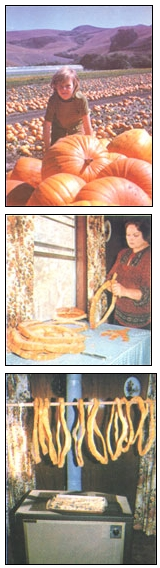

O, it sets my heart a-clickin' like the tickin' of a clock,When the frost is on the punkin and the fodder's in the shock. (James Whitcomb Riley)
When most of us think of pumpkins, we tend to limit our conjuring to visions of spicy pies and eerily glimmering jack-o'-lanterns. Actually, though, the bright round gourds have served a number of additional purposes - gastronomic and otherwise - since . . . well, since before recorded history.
In fact, archaeologists have found the remains of pumpkins among the relics left by ancient cliff dwellers. And when Europeans first arrived on these shores, they were quick to learn - from native Americans - to plant the distinctive squash between hills of corn . . . discovering that their sprawling vines served as a living mulch and helped keep the maize fields free of weeds. The early settlers apparently developed "orange thumbs" in this regard, too . . . because Samuel Eliot Morison (an expert on the period) writes, in his book The Story of the "Old Colony" of New Plymouth , that the pumpkins harvested prior to that first Thanksgiving were piled "in great golden heaps alongside the houses".
Of course, back in those days folks were wise enough to make an effort to get the maximum use out of everything they had . . . and the lowly pumpkin was no exception. Some accounts actually report that early New England barbers - when they couldn't find a cap or bowl for the purpose - simply hollowed out a small pumpkin shell and fit it over the hair of a customer as a make-do shearing guide (hence the expression "pumpkin head").
And, as you'd imagine, pioneer cooks used the vegetables extensively: They dried the gourds and ground them into flour . . . they baked or steamed the shells and - after pressing the cooked pulp through a sieve and adding sweetening and spices - put up jars of pumpkin butter . . . and they prepared puddings and soups and wines and dozens of other dishes from the squash, as well. (In 1672, author John Josselyn reported in his journal, New England Rarities Discovered , that stewed pumpkin makes a nice accompaniment to "fish or flesh" but observed that the vegetable "provokes urine extremely and is very windy".)
All in all, then, this food is certainly versatile enough to deserve a more prominent place in the contemporary North American kitchen. For one thing, pumpkin ranks among the richest of domestic produce nutritionally: A half-cup contains only 27 calories . . . but yields a whopping 2,500 units of vitamin A, and considerable quantities of B complex and C vitamins, too . . . along with generous amounts of phosphorus, calcium, and iron.
Interestingly enough, relatively few cooks today realize that pumpkin can be substituted in virtually any recipe calling for winter squash. (Botanically speaking, the pumpkin species - Cucurbita pepo - includes summer squash, too, but the "symbols of Halloween" themselves are closer in texture and flavor to, and therefore more appropriate alternates for, winter varieties.)
As a matter of fact, because pumpkin tends to take on the dominant flavors of whatever ingredients it's cooked with, you can use it as the basis for many different dishes . . . particularly those that are highly spiced. For example, next time you crave some banana nut bread and don't have any of the tropical fruit on hand, remember that "punkin" can save the day.
TO PICK A PUMPKIN
I hope I've convinced you to try to increase your use of this tasty, healthful vegetable, because early fall is the beginning of the season when fresh pumpkins are abundant ( and inexpensive). If you're growing your own, do wait till after the first frost . . . then cut the orbs from their vines, leaving about one inch of stem on each. But don't bring the harvest inside immediately. Instead, let the fruit "cure" in the field for two to three weeks (unless you're hit by an extended rainy spell . . . in which case you should get the golden globes under cover to prevent rot).
If you're buying a pumpkin, choose a specimen with a firm skin and stem. The small "sugar" varieties are best for cooking . . . but just about any size can be used in most dishes. There's no reason, for example, why you can't purchase a pumpkin of substantial girth to be carved into a jack-o'-lantern and then recycled, after Halloween, into a tasty meal or two.
TO PRESERVE A PUMPKIN
It isn't necessary that you eat your entire supply of pumpkin right away . . . since one of this vegetable's greatest advantages is its easy preservability. The gourds don't keep quite as well in a root cellar as do thickerskinned winter squash . . . but if handled gently so that they don't bruise, and stored - off the ground and not touching one another - in a cool (50° to 60°F) moisture-free location, they should stay fresh for up to three months. (Do wipe the cellared fruit with a cloth from time to time, though . . . otherwise, the moisture resulting from condensation could lead to decay.)
Of course, you can also freeze or can pumpkin . . . by following the instructions in any good cookbook or food-preservation text. As an alternative, though, you might want to try a handy traditional southern method for drying the produce. Just scoop out the insides and slice the fruit into inchwide rings . . . and then peel the circles and hang them on a horizontal broom handle or stick near your stove or - when the weather's good - outside.
If you let the rounds dehydrate until they're tough and leathery, and then store them in airtight containers (or simply hang them in a warm, dry place), they'll keep for quite a long time . . . but if you use this preservation method, you will have to cook the food at length - as much as several hours - to restore it to a palatable consistency.
MOTHER'S ALL-TIME FAVORITE PUMPKIN PIE RECIPE
We've printed a prodigious number of recipes within the pages of this magazine over the years, but few have elicited as much praise from palate-pleased readers as did the pumpkin pie "receipt" submitted to us by Esther Shuttleworth, mother of the founder of this publication. We first revealed Mrs. Shuttleworth's secret in issue 41's foldout and - in honor of the approaching Thanksgiving season - reprint it here.
ESTHER SHUTTLEWORTH'S PUMPKREAM PIE
1 cup of granulated sugar (this would be difficult to substitute for . . . and, after all, it's a holiday!) 1 teaspoon of cinnamon 1/4 teaspoon of nutmeg 1/4 teaspoon of cloves (optional) 1 pinch of salt 2 eggs 1 cup of pumpkin (canned, or fresh and cooked till thick) 1 cup of thick sweet whipping cream unbaked pie crust
Combine all the dry ingredients, and beat in the two eggs till the mixture is fluffy. Stir in the pumpkin and then the whipping cream. When the filling is thoroughly blended, pour it into an 8" (1-1/4"-deep) pastry-lined piepan, and bake it at 425°Ffor 20 minutes. Then reduce the heat to 375°F, and bake the pie for approximately 30 more minutes, or until a toothpick inserted into the filling comes out clean. While in the oven, the "pumpkream" will rise, then fall somewhat and - when it's nearly done - develop little "good pie" cracks along the edges. "Most pumpkin pies are too spicy and 'pumpkiny' for my family," says Mrs. Shuttleworth, "but they love this one!"
PUMPKIN SEEDS
I often wonder how many thousands of pounds of delicious pumpkin seeds are thrown away each year by folks who are anxious to scrape out the "gunky stuff" and get to work carving their jack-o'-lanterns! I hope you won't be among those unfortunate individuals this season . . . because it's a simple matter to turn those "worthless" kernels into a terrific taste treat for the entire family.
Simply rinse the nuggets in water to wash away the strands of pulp, and then - after letting them dry - scatter about two cupfuls on an oiled cookie sheet or shallow baking pan. Sprinkle the seeds with a couple of tablespoons of melted butter or salad oil, and - if you wish - a teaspoon or so of salt or herbs, and bake them in a slow (250°F) oven until they're crisp. (You may want to turn up the heat for the last five minutes to brown them nicely.)
If you like sunflower kernels, you'll probably love roasted pumpkin (or squash, for that matter) seeds . . . and incidentally, you can eat them shells and all. Better yet, besides being downright delectable, the food makes an exceptionally nutritious high-energy snack: An ounce of roasted pumpkin seeds yields 160 calories, eight grams of protein, three milligrams of iron, and substantial quantities of B vitamins to boot!
Strange as it may sound, you can also make a healthful drink from the nuggets: Combine a cup of pumpkin seeds and fibers, 3 cups of water or fruit juice, a tablespoon of honey, and a teaspoon of parsley or mint . . . and process the mixture in a blender. When the shells are pulverized, strain the concoction and store the liquid in the refrigerator until you're thirsty!
AND THAT'S NOT ALL!
In addition to its better-known culinary characteristics, the pumpkin serves a variety of other practical purposes. Much of this country's crop is sold for stock feed . . . and in Europe the seeds are pressed to produce a much-cherished cooking oil. Some say, too, that the leaves from a pumpkin plant can provide an effective fly repellent for cattle when crushed and rubbed on the animals' backs and necks. And you can even make a nifty wind instrument from a pumpkin vine: Just choose a sturdy eight- or ten-inch length of hollow stem and then - at a point about an inch from one end - carve a 1/4-inch hole and (a few inches farther down) three or four additional bores spaced about an inch apart. Then play the gadget as you would a fife!
One thing's for sure: No matter what you use your pumpkins for this year, you'll be joining the ranks of individuals who - over the decades and centuries and millenniums - have learned that this humble, easy-to-grow squash,is a faithful provider . . . and a true friend to those seeking sustenance and pursuing the path of self-sufficiency. And that, perhaps, is precisely what makes the pumpkin great.
EDITOR'S NOTE: If you're interested in expanding your repertoire of delicious pumpkin-based dishes, you'd do well to latch onto a delightful little cookbook by Erik Knud-Hansen entitled Pumpkin Happy . The illustrated 54-page paperback contains recipes for dozens of tasty-sounding foods - from pumpkin garlic soup and pumpkin fritters to soufflé, custard, ice cream, breads and biscuits, and wine (just to name a few!) - and is available for $3.00 plus $1.00 shipping and handling (California residents add 6% tax) from Aniccha Press, Dept. TMEN, Star Route, Box 5, Camptonville, California 95922. You may also be interested in the recipes included in MOTHER NO. 23's "The Pumpkin . . . A Challenge to Creative Cooking" (page 48), as well as the instructions for making, preserving, and using pumpkin butter in No. 65 (page 153). To order back issues, turn to page 52.
|
 FROM TOP : A field full of fall's flavored food. . . . A wonderfully easy, old-timey way to dry pumpkin. (PHOTOS BY THE AUTHOR) |
|
|